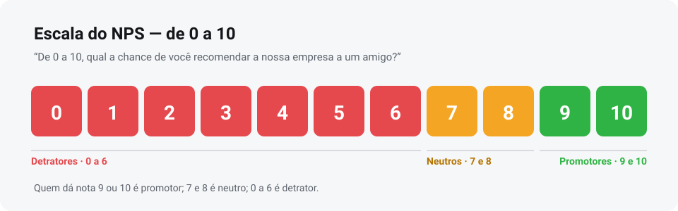
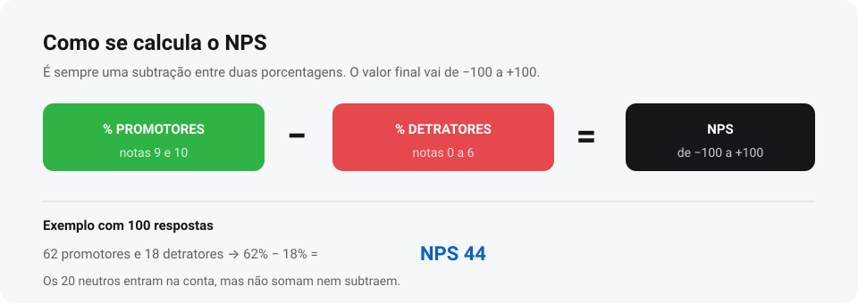

Métrica
O que é NPS, para que serve e como calcular
O NPS transforma uma única pergunta em um número que acompanha a relação do cliente com a sua empresa ao longo do tempo. Entenda a métrica e como colocá-la para funcionar.
NPS (Net Promoter Score) é uma métrica de lealdade. Você faz uma única pergunta — “de 0 a 10, qual a chance de você recomendar a nossa empresa a um amigo?” — e classifica as respostas em detratores, neutros e promotores.
O resultado é a porcentagem de promotores menos a de detratores, num intervalo de −100 a +100. Quanto mais alto, maior a chance de o cliente recomendar e voltar.
Neste artigo
Para que serve o NPS
O NPS responde a uma pergunta que nenhuma planilha de vendas responde sozinha: o cliente voltaria e indicaria a sua empresa? Ele serve para quatro usos práticos:
- Acompanhar a relação ao longo do tempo. O número de hoje comparado ao do trimestre passado mostra se a percepção está melhorando ou piorando.
- Comparar unidades, lojas ou equipes. Com a mesma pergunta em todas as praças, você vê onde a experiência falha.
- Priorizar investimento. Se o NPS cai sempre no mesmo ponto do atendimento, é ali que o dinheiro deve ir.
- Antecipar risco de perda. Detratores são o grupo mais propenso a sair — e o alvo mais útil de uma ação de recuperação.
O NPS não é uma pesquisa longa nem um relatório complexo. É um termômetro simples, medido sempre do mesmo jeito.

A escala e o que é cada grupo
A divisão não é aleatória: ela foi desenhada para separar quem defende a marca de quem apenas tolera.
- Promotores (9 e 10): clientes leais, que recomendam e voltam. São a base de crescimento por indicação.
- Neutros (7 e 8): satisfeitos, mas sem entusiasmo. Não defendem nem sabotam. São o maior grupo de oportunidade.
- Detratores (0 a 6): insatisfeitos que podem falar mal da empresa. Aqui mora o risco de reputação.
Repare que os neutros entram na conta do total, mas não somam nem subtraem. Por isso um NPS pode ser 0 mesmo com a maioria das notas acima de 7.
Como calcular o NPS
O cálculo tem três passos e não exige software especial:
- Conte quantas respostas foram promotoras (9 e 10) e divida pelo total de respostas.
- Faça o mesmo com as detratoras (0 a 6).
- Subtraia: % promotores − % detratores.

| Grupo | Notas | Respostas | Percentual |
|---|---|---|---|
| Promotores | 9 e 10 | 62 | 62% |
| Neutros | 7 e 8 | 20 | 20% |
| Detratores | 0 a 6 | 18 | 18% |
| Resultado | 62% − 18% | — | NPS 44 |
Atenção ao tamanho da amostra. Um NPS calculado sobre 5 respostas oscila demais para orientar decisão. Só faz sentido comparar períodos quando o volume é parecido.
O que é um NPS bom
Não existe um número universal. Um NPS 40 pode ser excelente numa operação e preocupante em outra, porque o patamar depende do setor, do tipo de relação e do momento da empresa.
O que funciona na prática é usar três referências, nesta ordem:
- Seu próprio histórico. A melhor comparação é você com você mesmo, na mesma pergunta.
- Suas unidades. Comparar lojas entre si revela o que a melhor faz de diferente.
- Faixas do setor, apenas como contexto. Elas variam muito e não substituem o seu dado.
Se quiser aprofundar, escrevi um artigo só sobre benchmark de NPS e como definir a sua meta.
Como implantar o NPS na empresa, passo a passo
A implantação é menos sobre ferramenta e mais sobre rotina. Estes seis passos evitam a maioria dos problemas:
- Defina a pergunta e não a mude. “De 0 a 10, qual a chance de você recomendar a nossa empresa a um amigo?” é o padrão. Alterar o texto a cada mês invalida a comparação.
- Escolha o momento da coleta. Logo após o atendimento, quando a experiência ainda está fresca. No totem de pesquisa, isso acontece no caminho de saída.
- Escolha o canal. Totem no ponto de venda, QR Code na embalagem ou na nota, WhatsApp depois do atendimento. O ideal é combinar canais, sem inflar a mesma pergunta.
- Deixe um comentário opcional. A nota diz quanto; o comentário diz por quê. É ele que aponta a correção.
- Defina a frequência de leitura. Uma leitura semanal para a operação e um fechamento mensal com o time.
- Feche o ciclo com o cliente. Quando uma melhoria nasce de um comentário, comunique. Isso muda a percepção de quem responde.
Regra prática: se a pesquisa não gera nenhuma decisão, ela deixa de ser respondida. O cliente percebe quando responde e nada acontece.
Erros que estragam o NPS
- Perguntar demais. Dez perguntas reduzem a conclusão. O NPS foi feito para ser curto.
- Pedir nota alta. Orientar o cliente a dar 10 contamina a amostra e esconde o problema real.
- Misturar públicos. Somar a nota de quem comprou com a de quem só visitou distorce o número.
- Olhar só a média. A distribuição mostra o que a média esconde — muitos detratores podem estar diluídos num mar de neutros.
- Comparar perguntas diferentes. Se o texto mudou, o histórico não vale.
Erros de operação — posicionamento do totem, convite confuso, tela ilegível — também derrubam o volume de respostas. Reuni esses casos em como aumentar a taxa de resposta.
Próximo passo
Coloque o NPS para rodar no ponto de atendimento
O totem coleta a nota no momento da saída, com comentário opcional e painel em tempo real. O software começa em R$ 69,90/mês e você testa 7 dias grátis.
Dúvidas
Perguntas frequentes sobre NPS
Qual é a pergunta oficial do NPS?
“De 0 a 10, qual a chance de você recomendar a nossa empresa a um amigo?”. Para manter o histórico comparável, o texto não deve mudar entre medições.
O NPS vai de quanto a quanto?
De −100 a +100. O pior caso é quando todos são detratores (−100) e o melhor é quando todos são promotores (+100).
Preciso de quantas respostas para o NPS valer?
Quanto mais respostas, mais estável o número. Como regra, só compare períodos quando o volume for parecido — amostras muito pequenas oscilam e enganam.
Dá para calcular NPS com poucos clientes?
Dá, desde que você leia o resultado como tendência e não como nota exata. Em volumes baixos, acompanhe a evolução ao longo de vários meses.
Qual a diferença entre NPS e CSAT?
O NPS mede a relação com a empresa; o CSAT mede a satisfação com um atendimento específico. Expliquei a diferença em detalhe neste artigo.
Conteúdo atualizado em 04/11/2026.